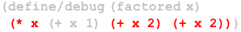

2 Rosette Essentials
Rosette adds to Racket a collection of solver-aided facilities. These facilities enable programmers to conveniently access a constraint solver that can answer interesting questions about program behaviors. They are based on three key concepts: symbolic values, assertions and queries. We use assertions to express desired program behaviors and symbolic values to formulate queries about these behaviors.
This chapter illustrates the basics of solver-aided programming with a few simple examples. More advanced tutorials, featuring extended examples, can be found in Section 2 of [1, 2].1
The following chapters describe the subset of Racket that can be safely used with solver-aided facilities, including the supported datatypes (both built-in and programmer-defined), syntactic forms, and libraries.
2.1 Symbolic Values
The Rosette language includes two kinds of values: concrete and symbolic. Concrete values are plain Racket values (#t, #f, 0, 1, etc.), and Rosette programs that operate only on concrete values behave just like Racket programs. Accessing the solver-aided features of Rosette—
(define-symbolic b boolean?)
> b b
You can think of a symbolic constant as a placeholder for a concrete constant of the same type. As we will see shortly, the solver, once called, determines which concrete value a given symbolic constant represents: it will tell us whether the constant b is #t or #f, depending on what question we ask about the behavior of a program (or a procedure) applied to b.
(define (static) (define-symbolic x boolean?) ; creates the same constant when evaluated x) (define (dynamic) (define-symbolic* y integer?) ; creates a different constant when evaluated y)
> (eq? (static) (static)) #t
> (eq? (dynamic) (dynamic)) (= y$0 y$1)
Printed constant names, such as x or b, are just comments. Two constants created by evaluating two distinct define-symbolic (or, define-symbolic*) forms are distinct, even if they have the same printed name. They may still represent the same concrete value, but that is determined by the solver:
(define (yet-another-x) (define-symbolic x boolean?) x)
> (eq? (static) (yet-another-x)) (<=> x x)
2.2 Assertions
; add (not b) to the stack of assertions to be solved > (assert (not b))
; retrieve the assertion store > (asserts) '((! b) #f)
; clear the assertion store > (clear-asserts!)
> (asserts) '()
2.3 Solver-Aided Queries
The solver reasons about asserted properties only when we ask a question about them—
(define (poly x) (+ (* x x x x) (* 6 x x x) (* 11 x x) (* 6 x))) (define (factored x) (* x (+ x 1) (+ x 2) (+ x 2))) (define (same p f x) (assert (= (p x) (f x))))
; check zeros; all seems well ... > (same poly factored 0)
> (same poly factored -1)
> (same poly factored -2)
2.3.1 Verification
> (define-symbolic i integer?)
> (define cex (verify (same poly factored i)))
The (verify expr) form queries the solver for a binding from symbolic constants to concrete values that causes the evaluation of expr to fail when the bound symbolic constants are replaced with the corresponding concrete values. If such a binding exists, as it does in our case, it is called a counterexample.
> (evaluate i cex) 12
> (same poly factored 12) assert: failed
2.3.2 Debugging
Now that we have an input on which factored differs from poly, the next step is to debug it, by figuring out which of its subexpressions are responsible for the fault. Rosette provides a query for this as well. To access it, we import the debugging facilities, mark factored as a candidate for debugging, and issue a debug query:
(require rosette/query/debug rosette/lib/render) (define (poly x) (+ (* x x x x) (* 6 x x x) (* 11 x x) (* 6 x))) (define/debug (factored x) ; define/debug marks a procedure as part of (* x (+ x 1) (+ x 2) (+ x 2))) ; the code to be debugged (define (same p f x) (assert (= (p x) (f x)))) > (define core (debug [integer?] (same poly factored 12))) > (render core) 
The (debug [predicate] expr) query takes as input an expression whose execution leads to an assertion failure, and one or more dynamic type predicates specifying which executed expressions should be treated as potentially faulty by the solver. That is, the predicates express the hypothesis that the failure is caused by an expression with one of the given types. Expressions that produce values of a different type are assumed to be correct.2
The output of a debug query is a minimal set of program expressions, called a minimal unsatisfiable core, that form an irreducible cause of the failure. Expressions outside of the core are irrelevant to the failure—
Like bindings, cores are first-class values. In our example, we simply visualize the core using the utility procedure render.3 The visualization reveals that the grayed-out subexpression (+ x 1) is irrelevant to the failure of factored on the input 12. To repair this failure, we have to modify at least one of the remaining expressions, which are highlighted in red.
2.3.3 Synthesis
The solver can not only find failure-inducing inputs and localize faults, it can also synthesize repairs for buggy expressions. To repair a program, we first replace each buggy expression with a syntactic "hole." A program with holes is called a sketch. The solver completes a sketch by filling its holes with expressions, in such a way that all assertions in the resulting program pass on all inputs.
(require rosette/lib/synthax) (define (poly x) (+ (* x x x x) (* 6 x x x) (* 11 x x) (* 6 x))) (define (factored x) (* (+ x (??)) (+ x 1) (+ x (??)) (+ x (??)))) (define (same p f x) (assert (= (p x) (f x))))
The (??) construct is imported from the rosette/lib/synthax library, which also provides constructs for specifying more complex holes. For example, you can specify a hole that is filled with an expression, drawn from a grammar you define.
> (define-symbolic i integer?)
> (define binding (synthesize #:forall (list i) #:guarantee (same poly factored i)))
> (print-forms binding) '(define (factored x) (* (+ x 0) (+ x 1) (+ x 2) (+ x 3)))
2.3.4 Angelic Execution
Rosette supports one more solver-aided query, which we call "angelic execution." This query is the opposite of verification. Given a program with symbolic values, it instructs the solver to find a binding for them that will cause the program to execute successfully—
> (define-symbolic x y integer?)
> (define sol (solve (begin (assert (not (= x y))) (assert (< (abs x) 10)) (assert (< (abs y) 10)) (assert (not (= (poly x) 0))) (assert (= (poly x) (poly y))))))
> (evaluate x sol) -5
> (evaluate y sol) 2
> (evaluate (poly x) sol) 120
> (evaluate (poly y) sol) 120
You can find more examples of angelic execution and other solver-aided queries in the sdsl folder of your Rosette distribution.
2.4 Symbolic Reasoning
Rosette implements solver-aided queries by translating them to the input language of an SMT solver. This translation is performed using a given reasoning precision, as specified by the current-bitwidth parameter. Setting current-bitwidth to a positive integer k instructs Rosette to approximate both reals and integers with k-bit words. Setting it to #f instructs Rosette to use infinite precision for real and integer operations.
> (define-symbolic x integer?)
> (current-bitwidth 5)
; no 5-bit solution or counterexample exists > (solve (assert (= x 64))) (unsat)
> (verify (assert (not (= x 64)))) (unsat)
> (current-bitwidth #f)
; but an integer solution and counterexample do exist > (solve (assert (= x 64)))
(model
[x 64])
> (verify (assert (not (= x 64))))
(model
[x 64])
By default, current-bitwidth is set to 5. Beware that using a large k or #f may have a negative effect on solver performance. In the worst case, using #f can cause the underlying solver to run forever.6
Non-termination can also be caused by passing symbolic values to recursive procedures. In particular, the expression that determines whether a recursion (or a loop) terminates must be executed on concrete values.
; while sandboxed evaluation of (ones x) times out, ; normal evaluation would not terminate > (define-symbolic x integer?)
> (letrec ([ones (lambda (n) (if (<= n 0) (list) (cons 1 (ones (- n 1)))))]) (printf "~a" (ones 3)) (printf "~a" (ones x))) (1 1 1)
with-limit: out of time
> (define-symbolic x integer?)
> (letrec ([adder (lambda (vs n) (if (null? vs) (list) (cons (+ (car vs) n) (adder (cdr vs) n))))]) (adder '(1 2 3) x)) '((+ 1 x) (+ 2 x) (+ 3 x))
See Chapters 7 and 8 to learn more about common patterns and anti-patterns for effective symbolic reasoning.
1Code examples in these references are written in Rosette 1.0. While Rosette 2.0 is not backward compatible with Rosette 1.0, they share the same conceptual core.